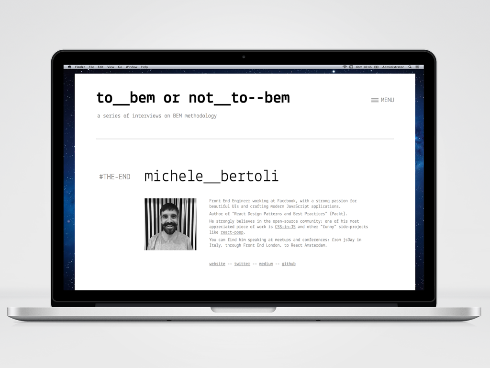
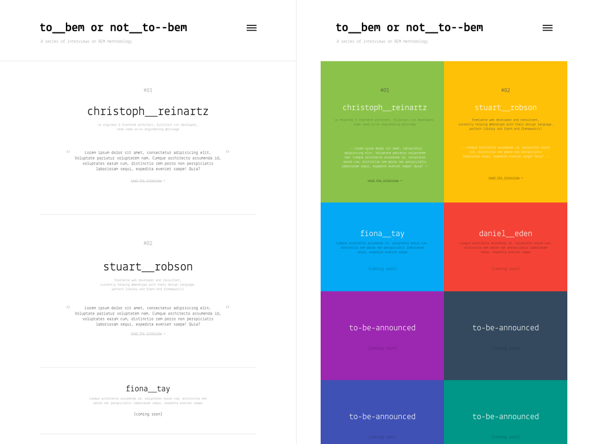
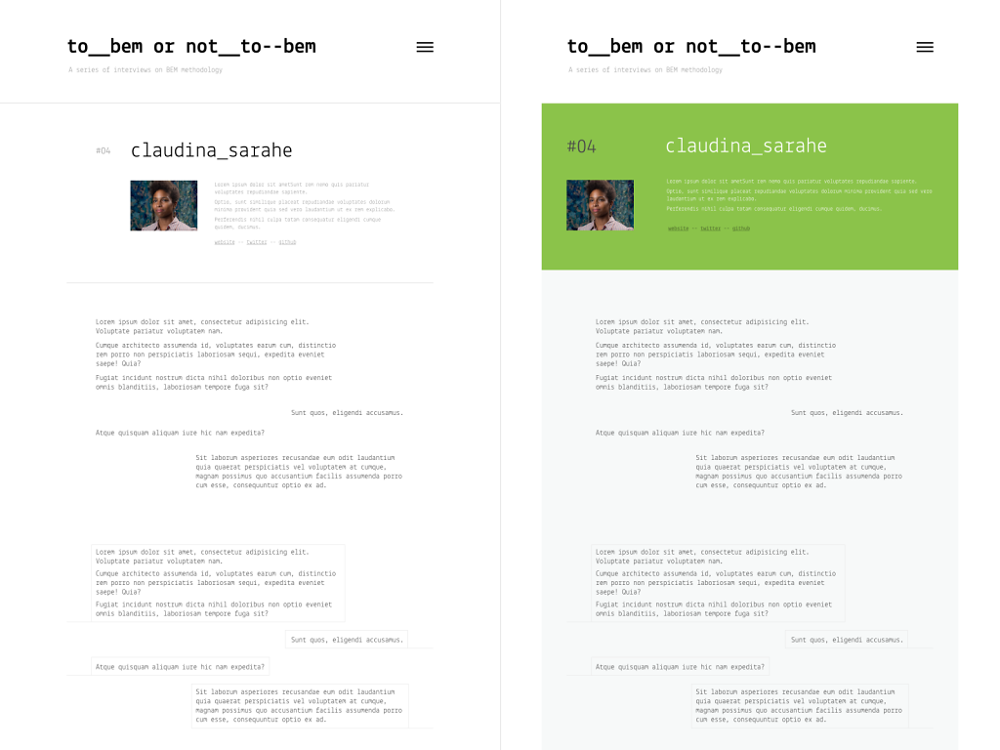

To BEM or Not To BEM
“To BEM or Not To BEM” is a series of interviews to different people that have used the BEM methodology on large CSS projects (on "real world" websites and applications, not simply "hello world" examples) to gather their feedback
and opinions, to try to understand their learnings and experiences. It’s not about the methodology itself - you can find plenty of tutorials, talks and posts about it - but it wants to be a way of getting insights on what works
well with BEM and what can go wrong, straight from the voices of the people that actually use it.
This is a side project I have followed (in my spare time) for about one year. It has received a lot of feedback and positive comments. I have put a lot of work in it. From the design perspective I have tried to remove as much as
possible, even the colours, leaving only the essential, to glorify and bring forward the content. The only design elements I have decided to use were the gray tone colours, the typography (I have used the amazing
Lekton typeface) and the white/negative space.
I am very proud of the final result: a simple and minimalistic website where – for once – the content is the real "king".
Website:
www.didoo.net/to-bem-or-not-to-bem/
- Medium:
medium.com/to-bem-ot-not-to-bem
-
Example of an interview page
This is one of the interviews of the series
 -
Design - Index page
The two variants I have designed for the index page, one completely monochromatic and one using basic flat colours.
 -
Design - Interview page
The two variants of the interview page, following the color scheme of the corresponding index page varian.
